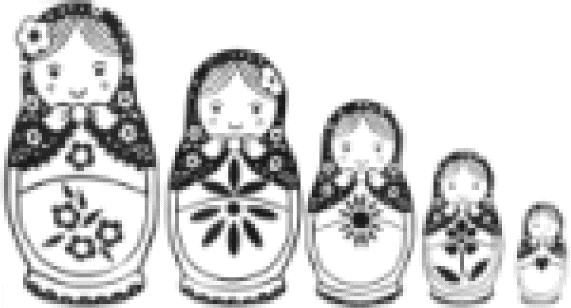
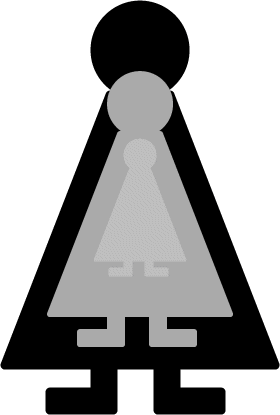
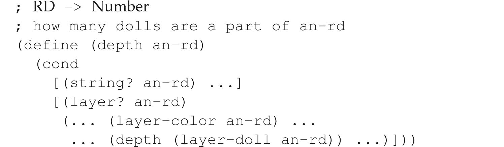

9.4 Russian Dolls
Wikipedia defines a Russian doll as “a set of dolls of decreasing sizes placed one inside the other” and illustrates it with this picture:

In this picture, the dolls are taken apart so that the viewer can see them all.
The problem may strike you as abstract or even absurd; it isn’t clear why you would want to represent Russian dolls or what you would do with such a representation. Just play along for now.
Now consider the problem of representing such Russian dolls with BSL data. With a little bit of imagination, it is easy to see that an artist can create a nest of Russian dolls that consists of an arbitrary number of dolls. After all, it is always possible to wrap another layer around some given Russian doll. Then again, you also know that deep inside there is a solid doll without anything inside.
For each layer of a Russian doll, we could care about many different things: its size, though it is related to the nesting level; its color; the image that is painted on the surface; and so on. Here we just pick one, namely the color of the doll, which we represent with a string. Given that, we know that each layer of the Russian doll has two properties: its color and the doll that is inside. To represent pieces of information with two properties, we always define a structure type:
(define-struct layer [color doll])
And then we add a data definition:
; An RD (short for Russian doll) is one of:
; -- String
; -- (make-layer String RD)
Naturally, the first clause of this data definition represents the innermost doll, or, to be precise, its color. The second clause is for adding a layer around some given Russian doll. We represent this with an instance of layer, which obviously contains the color of the doll and one other field: the doll that is nested immediately inside of this doll.
Take a look at this doll:

It consists of three dolls. The red one is the innermost one, the green one sits in the middle, and the yellow is the current outermost wrapper. To represent this doll with an element of RD, you start on either end. We proceed from the inside out. The red doll is easy to represent as an RD. Since nothing is inside and since it is red, the string "red" will do fine. For the second layer, we use
(make-layer "green" "red")
which says that a green (hollow) doll contains a red doll. Finally, to get the outside we just wrap another layer around this last doll:
(make-layer "yellow" (make-layer "green" "red"))
This process should give you a good idea of how to go from any set of colored Russian dolls to a data representation. But keep in mind that a programmer must also be able to do the converse, that is, go from a piece of data to concrete information. In this spirit, draw a schematic Russian doll for the following element of RD:
(make-layer "pink" (make-layer "black" "white"))
You might even try this in BSL.
Now that we have a data definition and understand how to represent actual dolls and how to interpret elements of RD as dolls, we are ready to design functions that consume RDs. Specifically, let’s design the function that counts how many dolls a Russian doll set contains. This sentence is a fine purpose statement and determines the signature, too:
; RD -> Number
; how many dolls are part of an-rd
As for data examples, let’s start with (make-layer "yellow" (make-layer "green" "red")). The image above tells us that 3 is the expected answer because there are three dolls: the red one, the green one, and the yellow one. Just working through this one example also tells us that when the input is a representation of this doll
then the answer is 1.
Step four demands the development of a template. Using the standard questions for this step produces this template:

The number of cond clauses is determined by the number of clauses in the definition of RD. Each of the clauses specifically spells out what kind of data it is about, and that tells us to use the string? and layer? predicates. While strings aren’t compound data, instances of layer contain two values. If the function needs these values, it uses the selector expressions (layer-color an-rd) and (layer-doll an-rd). Finally, the second clause of the data definition contains a self-reference from the doll field of the layer structure to the definition itself. Hence we need a recursive function call for the second selector expression.
The examples and the template almost dictate the function definition. For the non-recursive cond clause, the answer is obviously 1. For the recursive clause, the template expressions compute the following results:
• (layer-color an-rd) extracts the string that describes the color of the current layer;
• (layer-doll an-rd) extracts the doll contained within the current layer; and
• (depth (layer-doll an-rd)) determines how many dolls are part of (layer-doll an-rd), according to the purpose statement of depth.
This last number is almost the desired answer but not quite because the difference between an-rd and (layer-doll an-rd) is one layer, meaning one extra doll. Put differently, the function must add 1 to the recursive result to obtain the actual answer:
; RD -> Number
; how many dolls are a part of an-rd
(define (depth an-rd)
(cond
[(string? an-rd) 1]
[else (+ (depth (layer-doll an-rd)) 1)]))
Note how the function definition does not use (layer-color an-rd) in the second clause. Once again, we see that the template is an organization schema for everything we know about the data definition, but we may not need all of these pieces for the actual definition.
Let’s finally translate the examples into tests:
(check-expect (depth "red") 1)
(check-expect
(depth
(make-layer "yellow" (make-layer "green" "red")))
3)
If you run these in DrRacket, you will see that their evaluation touches all pieces of the definition of depth.
Exercise 154. Design the function colors. It consumes a Russian doll and produces a string of all colors, separated by a comma and a space. Thus our example should produce
"yellow, green, red"

Exercise 155. Design the function inner, which consumes an RD and produces the (color of the) innermost doll. Use DrRacket’s stepper to evaluate (inner rd) for your favorite rd.